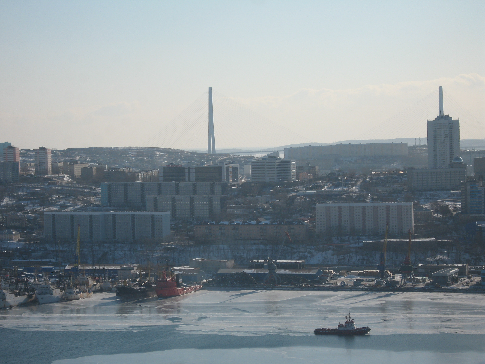

Танкер и мост
Танкер плывёт по замерзшему морю. Мост — вдалеке, как будто охраняющий вход в город. Эта картина — о силе человека, который покоряет природу, но не разрушает её.
← Вернуться на главную